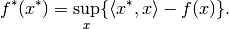

expm1_func.convex_conj¶
-
expm1_func.convex_conj¶ Convex conjugate functional of the functional.
Notes
The convex conjugate functional of a convex functional
 ,
defined on a Hilber space, is defined as the functional
,
defined on a Hilber space, is defined as the functional
The concept is also known as the Legendre transformation.
For literature references see, e.g., [Lue1969], [Roc1970], the wikipedia article on Convex conjugate or the wikipedia article on the Legendre transformation.
References
[Lue1969] Luenberger, D G. Optimization by vector space methods. Wiley, 1969.
[Roc1970] Rockafellar, R. T. Convex analysis. Princeton University Press, 1970.